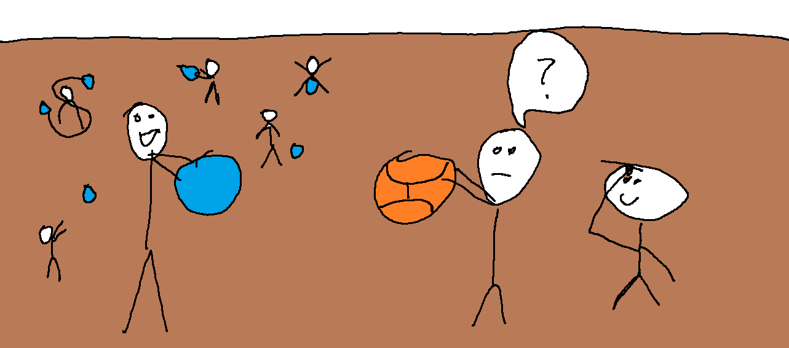

Kosárlabdát vett ki Szinusz kézilabda helyett
Kosárlabdát vett ki Szinusz tesiórán kézilabda helyett, nyilatkozta Koszinusz. Elmondása szerint miután mindenki egy kézilabdát vett ki a kaptárból röplabdázáshoz, Szinusz egy kosárlabdát vett ki, és elkezdett vele gyakorolni. Koszinusz az esemény elmondása közben megemlítette, hogy Szinusz milyen nagy hülyeséget csinált, mivel mindenki tudja, hogy röplabdázni nem kosárlabdával, hanem kézilabdával kell.